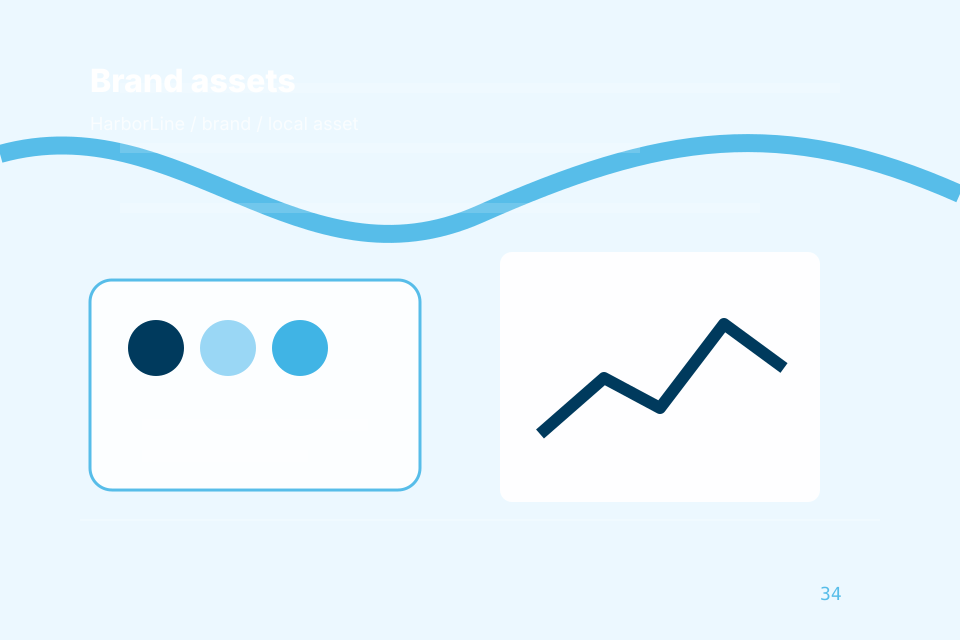

<!-- Static hand-authored header partial. -->
<a class="skip-link" href="#main">Skip to content</a>
<header class="site-header header-maritime-utility-header" data-header data-header-type="Maritime utility header" data-mobile-menu="Primary-reference mobile navigation">
  <div class="header-utility" role="status"><span>Priority route</span><a href="../contact.html?route=urgent" data-track="header_priority_route">Request Shipping</a></div>
  <div class="container nav-shell">
    <a class="brand" href="../index.html" aria-label="HarborLine home">
      
      <span><strong>HarborLine</strong><small>Maritime corporate clarity with pale blue, logistics forms, and route tracking</small></span>
    </a>
    <button class="menu-toggle" type="button" data-menu-toggle aria-expanded="false" aria-controls="site-menu">Menu</button>
    <nav class="site-nav mobile-menu-primary-reference-mobile-navigation" id="site-menu" aria-label="Main navigation">
      <a href="../index.html" aria-current="page">Home</a><a href="../company.html">Company</a><a href="../services.html">Services</a><a href="../fleet.html">Fleet</a><a href="../ports.html">Ports</a><a href="../contact.html">Contact</a>
    <a href="../asset-system.html">Assets</a></nav>
    <a class="nav-cta" href="../contact.html" data-track="header_cta">Request Shipping</a>
  </div>
</header>
